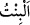
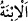
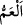
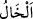
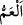

geçmektedir.
Kız demek olan “__WORD__ ve “__WORD__ kelimeleri, “__WORD__ (oğul)” kelimesinin müennesidir. “__WORD__(amca)” babanın erkek kardeşi, “__WORD__ (hala)” babanın kız kardeşidir. Âyetteki “amcanın,
halanın kızlarını sana helâl kıldık” sözünün mânâsı, sana Abdülmuttalib evlâdından
Kureyş kadınlarını helâl kıldık, demektir.
Peygamber (s.a.)’in on iki amcası vardır. Bunlar Hâris, Ebû Tâlib, Zübeyr,
Abdülka‘be, Hamza, Mukavvim/Mukavvem, Cahl veya Hacl (asıl adı Muğîre’dir),
Abbâs, Dırâr, Ebû Leheb (Abdüluzzâ), Kusem, Gaydâk (Asıl adı Mus‘ab veya
Nevfel’dir. Çok cömert olduğu için ‘Gaydâk’ diye isimlendirilmiştir.) Hz. Peygamber
(s.a.)’in bi‘sete (peygamberlik dönemine) yetişen amcalarından sadece Hamza ve
Abbâs müslüman olmuştur.
Peygamberimiz’in (a.s.) amcalarının kızları şunlardır: Mikdâd’ın nikâhı altında olan
Sabbâğa bint Zübeyr b. Abdülmuttalib, Nadr b. Hâris’in nikahı altında olan Ümmü’l-
Hakem bint Zübeyr, ismi Fâhite olan Ümmü Hâni bint Ebû Tâlib, Cümâne bint Ebû
Tâlib; Abdulmuttalib oğlu Abbâs’ın kızları Ümmü Habîbe, Âmine ve Safiyye;
Abdulmuttalib oğlu Hâris’ın kızı Ervâ’dır.
Peygamberimiz’in (a.s.) altı halası vardır. Bunlar ismi Beyzâ olan Ümmü Hakîm,
Âtike, Berre, Ervâ, Ümeyme ve Safiyye’dir. Peygamberlik devrini idrak eden
halalarından hiç ihtilâfsız yalnız Zübeyr b. Avvam’ın annesi Safiyye müslüman
olmuştur. Safiyye (r.a.) Medîne’ye hicret etmiş ve Hz. Ömer’in hilâfeti döneminde vefat
etmiştir. Âtike ve Ervâ’nın müslüman olup olmadıkları ihtilaflıdır.
Müşrik oldukları için Rasûlullah (s.a.) amca kızlarından hiçbiriyle evlenmemiştir.
Hala kızlarına gelince bunlardan yalnız Zeynep bint Cahş bint Rebab ile evliydi. Çünkü
Zeyneb’in annesi Abdulmuttalib kızı Ümeyme’dir. Nitekim et-Tekmile’de böyle
geçmektedir.
“__WORD__ (dayı)” annenin erkek kardeşi, “__WORD__ (teyze)” annenin kız kardeşidir. Âyette
“dayının ve teyzenin kızlarını sana helâl kıldık.” sözüyle kasdedilen,
Zühreoğulları’nın, yâni Abdümenâf b. Zühre evlâdının kadınlarıdır. Yoksa Hz.
Peygamber (s.a.)’in annesinin erkek ve kız kardeşlerinin kızları değildir. Çünkü
Rasûlullah (s.a.)’in annesi Âmine bint Vehb’in erkek kardeşi de kız kardeşi de yoktur.
Hz. Peygamber (a.s.)’ın dayısı da teyzesi de olmadığına göre âyetteki “dayı ve teyze”
ile kasdedilen annesinin aşîreti/akrabasıdır. Hz. Peygamber (s.a.)’in annesi
Zühreoğulları’ndan olduğu için onlar: “Biz Hz. Peygamber (a.s.)’ın dayılarıyız.”
derlerdi. Bu sebeple Peygamberimiz (a.s.) Sa‘d b. Ebî Vakkas (r.a.)’a “Bu benim
dayımdır.”[255] demiştir.
Her ne kadar hepsinin mânâsı çoğul olsa da âyette “__WORD__ (amca)” ve “__WORD__ (dayı)”
kelimelerinin müfred/tekil, “__WORD__ (halalar)” ve “__WORD__ (teyzeler)” kelimeleri cem‘/
çoğul yapılmıştır. Çünkü “__WORD__ ve “__WORD__ kelimeleri müfred olduklarında cins mânâsı
verdiklerinden hafiflik olması için onların çoğul lafızlarına ihtiyaç kalmamıştır. “__WORD__